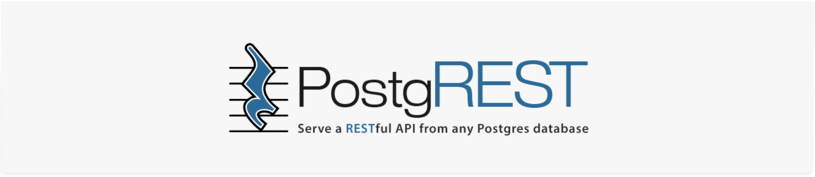

Navigation
index
next
|
PostgREST 5.0.0 documentation
»

What is PostgREST?
Motivation
Declarative Programming
Leak-proof Abstraction
Embracing the Relational Model
One Thing Well
Shared Improvements
Ecosystem
Client-Side Libraries
External Notification
Example Apps
In Production
Extensions
Commercial
Testimonials
Getting Support
Tutorials
Tutorial 0 - Get it Running
Step 1. Relax, we’ll help
Step 2. Install PostgreSQL
Step 3. Install PostgREST
Step 4. Create Database for API
Step 5. Run PostgREST
Tutorial 1 - The Golden Key
Step 1. Add a Trusted User
Step 2. Make a Secret
Step 3. Sign a Token
Step 4. Make a Request
Step 4. Add Expiration
Bonus Topic: Immediate Revocation
Installation
Binary Release
PostgreSQL dependency
Configuration
Running the Server
Docker
Containerized PostgREST with native PostgreSQL
Containerized PostgREST
and
db with docker-compose
Build from Source
PostgREST Test Suite
Creating the Test Database
Running the Tests
Destroying the Database
Testing with Docker
API
Tables and Views
Horizontal Filtering (Rows)
Full-Text Search
Vertical Filtering (Columns)
Computed Columns
Ordering
Limits and Pagination
Response Format
Singular or Plural
Binary output
Unicode Support
Resource Embedding
Embedded Operations
Custom Queries
Stored Procedures
Explicit Qualification
Accessing Request Headers/Cookies
Errors and HTTP Status Codes
Setting Response Headers
Insertions / Updates
Bulk Insert
Upsert
Deletions
OpenAPI Support
HTTP Status Codes
Authentication
Overview of Role System
Authentication Sequence
Users and Groups
Roles for Each Web User
Web Users Sharing Role
Hybrid User-Group Roles
Custom Validation
Client Auth
JWT Generation
JWT from SQL
JWT from Auth0
Asymmetric Keys
JWT security
SSL
Schema Isolation
SQL User Management
Storing Users and Passwords
Public User Interface
Logins
Permissions
Administration
Hardening PostgREST
Block Full-Table Operations
Count-Header DoS
HTTPS
Rate Limiting
Debugging
Server Version
HTTP Requests
Database Logs
Schema Reloading
Alternate URL Structure
Next topic
Motivation
This Page
Show Source
Quick search
Navigation
index
next
|
PostgREST 5.0.0 documentation
»